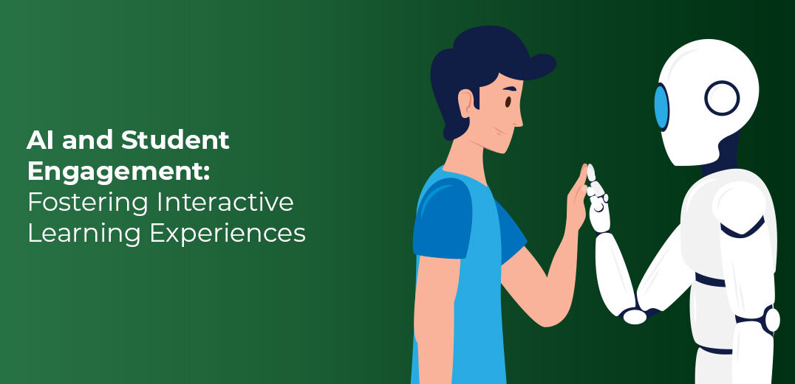
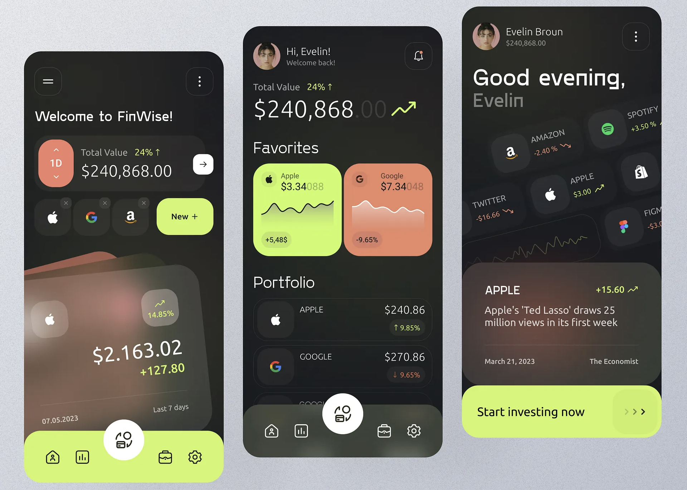
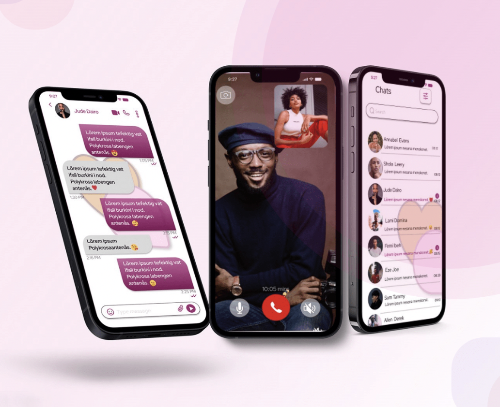

Hello, I'm
Innovating with Code, Engineering with Passion
I am a Full-Stack Developer with around 4 years of experience
building production-ready web, mobile, and AI-driven applications.
My experience combines full-stack engineering, backend system
design, AI integrations, database optimization, cloud-ready
development, and team collaboration.
I completed my Bachelor’s in Information Technology from Gujarat
Technological University in India, and later moved to the United
States to pursue my Master’s in Computer Science at Loyola
Marymount University. During my master’s, I also served as a
Graduate Student Senator for the Seaver College of Science and
Engineering, where I represented student concerns, collaborated
with different groups, and strengthened my communication,
leadership, and problem-solving skills. I also received 3rd place
in the BEST Bootcamp, which gave me experience in business
analysis, teamwork, requirement understanding, solution design,
and presenting ideas clearly.
I started my career in India with Shiv Infotech, a software
services company, where I worked as a Full-Stack Developer for
around two years. My work focused on delivering client-based
production applications using technologies like React, Angular,
Node.js, Python, SQL databases, and MongoDB. I worked on frontend
development, backend APIs, database design, performance
optimization, and CI/CD pipelines for reliable deployments. I also
got the opportunity to lead and mentor a team of JavaScript
developers, where I helped with code reviews, debugging, task
planning, and improving delivery quality.
Later, during my master’s, I worked on MealMate, an AI-powered
meal analysis application. My work involved building components of
the React Native mobile app, developing Python backend APIs,
integrating OpenAI-based LLM features, and implementing key
features like food image capture, barcode scanning, and AI
chat-based meal logging. I also worked with computer vision
workflows and USDA nutrition datasets to support real-time
calorie, ingredient, and nutrient analysis. One of my key
contributions was optimizing backend workflows and reducing p95
latency by 40%.
After graduation, I got the opportunity to work with Plaid, where
I am working on an AI-powered financial insights portal. My work
includes building FastAPI microservices, integrating Claude AI for
transaction classification and predictive insights, developing
secure React dashboards, and collaborating with cross-functional
teams to translate business needs into technical features. I also
work on secure REST APIs, authentication, logging, encryption,
testing, and production readiness.
Along with my technical skills, I bring strong soft skills such as
communication, ownership, adaptability, leadership, collaboration,
and problem-solving. I enjoy working with both technical and
non-technical teams, understanding business requirements, breaking
down complex problems, and delivering solutions that create
measurable impact. Overall, my background combines software
engineering, AI-driven product development, team leadership, and
the ability to take ideas from requirements to reliable production
systems.
Coursework: Artificial Intelligence, Data Science, Agile
methodology, Database Systems, Program Language Semantics
GPA - 3.76
Coursework: Object Oriented Programming, Web Programming, Mobile
Application Development, Operating System and Virtualization,
Data Structures and Algorithms, Data Compression
GPA - 3.82
Developed an AI platform simulating realistic job interviews, analyzing tone, speech, and facial cues in real time, generating personalized questions via GPT-4 and spaCy, with backend on FastAPI/PostgreSQL and frontend using React.js/Tailwind.

Created a student engagement platform designed to enhance academic support, track performance, and provide personalized learning experiences. It utilizes machine learning, NLP, deep learning, and computer vision to analyze student behavior, predict academic performance, and offer tailored recommendations.

Built a financing platform enabling businesses to raise capital through syndicate investments, supporting 10K+ concurrent users, with NestJS, PostgreSQL, and Vue.js, while leading a 7-member Agile team achieving 98% on-time feature delivery.

Built a social networking platform that allows users to connect with potential matches, share posts, and engage in real-time messaging, with analytics to enhance the user experience and engagement. The platform helps individuals find their life partner.